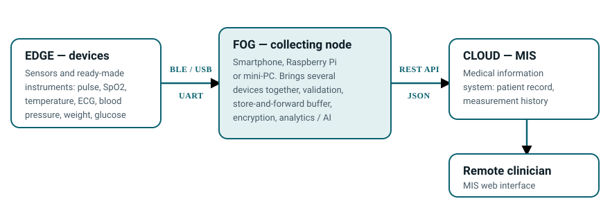

About the competition
Teams are asked to build a telemedicine kit comparable in purpose to off-the-shelf systems such as IDIS2GO, but assembled from components available on the open market and from whatever is at hand. The point is not to clone an existing product — it is to find an engineering solution within a realistic budget.
Comparable systems for reference
Look at what already exists before designing your own. These are reference points for purpose and range of measurements, not templates to copy: their price and their closed nature are precisely the problem we want to get around.
- IDIS2GO (SK-Telemed, Austria) — a portable diagnostic station: ECG, blood pressure, SpO2, glucose, spirometry, temperature.
- TytoCare — a handheld device for remote examination: stethoscope, otoscope, camera, thermometer.
- MedWand — a multi-sensor device the size of a computer mouse: temperature, SpO2, ECG, auscultation, camera.
- HealthyPi (ProtoCentral) — a fully open-source vital signs monitor built on the Raspberry Pi and ESP32: ECG, respiration, PPG, SpO2, temperature. The closest example to our format, with open code and schematics.
The kit is built on an edge → fog → cloud architecture:
- Edge — the measuring devices themselves: a sensor or a ready-made instrument that takes a reading at the patient's side and does the first processing of the signal.
- Fog — the node that receives and brings together the data from all those devices, validates it, keeps it when the link drops, and can compute things locally.
- Cloud — the medical information system (MIS) developed in our earlier project; the fog node sends measurements there through an API.
The goal is a solution for communities that are short of doctors: readings are taken on site by a nurse, a paramedic or the patient, and become available to a remote clinician immediately.

Measured on site
Readings are taken where the patient is, with no trip to the city.
Processed next to the patient
The fog node brings all the devices together, filters and stores data even on a poor connection.
Reviewed remotely
The API carries the data into the MIS, where it becomes part of the patient record.
Comparable systems for reference
Look at what already exists before designing your own. These are reference points for purpose and range of measurements, not templates to copy: their price and their closed nature are precisely the problem we want to get around.
- IDIS2GO (SK-Telemed, Austria) — a portable diagnostic station: ECG, blood pressure, SpO2, glucose, spirometry, temperature.
- TytoCare — a handheld device for remote examination: stethoscope, otoscope, camera, thermometer.
- MedWand — a multi-sensor device the size of a computer mouse: temperature, SpO2, ECG, auscultation, camera.
- HealthyPi (ProtoCentral) — a fully open-source vital signs monitor built on the Raspberry Pi and ESP32: ECG, respiration, PPG, SpO2, temperature. The closest example to our format, with open code and schematics.
Who can enter
Participants
Students of Ukrainian higher education institutions, from any discipline: IT, electronics, biomedical engineering, medicine, design.
Team size
Two to five people. A faculty mentor may advise the team; the mentor does not count towards the limit and does not do the students' work.
Interdisciplinary teams and teams drawn from several universities are welcome: the kit calls for circuit design, software engineering and an understanding of the clinical workflow alike.
Timeline and deadlines
-
By 5 November 2026
Submit the application form together with a project proposal.
-
By 10 November 2026
Selected teams are announced; equipment is purchased and / or funded against the approved applications.
-
November – December 2026
Prototype development with mentor support.
-
December 2026 – January 2027
The competition itself: hackathon and final demonstration in Rivne.
-
Spring 2027
Presentation of the best solutions in Oxford.
What to submit
1. The completed application form
Application form — team contacts and basic details of the project.
2. A project proposal in PDF
A single PDF following the structure below. Written in Ukrainian or English.
Length: no more than 10 A4 pages, i.e. up to 18,000 characters including spaces (about 1,800 characters per page, 12–14 pt type, 2 cm margins). Diagrams, photographs and tables count towards the page limit.
TODO Before the site goes live, replace [посилання на Google Form] with the real form address (the “Apply now” button in the header and the link in this section).
Structure of the project proposal
Keep this numbering — the judges compare proposals section by section. The block below can be copied as a table of contents.
- Project title and team. Members, roles, contacts, mentor.
- Problem and target user. Who the kit is for and the conditions it will work in.
- Measurements. Which parameters the kit will measure (for example: temperature, pulse, SpO2, blood pressure, ECG, spirometry, glucose, weight) and why these in particular.
- Architecture. Edge devices → fog node → MIS in the cloud via API. A diagram is mandatory.
- Equipment list. A table with the columns: “Component / model”, “Purpose”, “Quantity”, “Approximate price, UAH”, “Shop link”, “Already available or to be purchased”. A total figure is required.
- Software. Languages, frameworks, data format, processing on the fog node, security and personal data protection.
- Use of AI / LLMs. Propose what could be computed or automated with AI or language models — on the fog node itself, where computing power is scarce (signal quality assessment, rejecting artefacts, compressing or selecting data before transmission, a local model instead of a cloud one), and beyond it, over the data already collected (spotting deviations in trends, a short summary for the clinician, helping the health worker with data entry). This need not be the central idea of the project: a well-argued proposal is enough, and a working prototype counts in your favour.
- Integration with the MIS API. Which data the team plans to send, and in what form.
- Work plan. A week-by-week schedule up to the final, and how tasks are split within the team.
- Risks and alternatives. What you will do if a component turns out to be unavailable.
- Expected outcome. What exactly will be demonstrated at the competition.
A worked example of the equipment list (item 5)
Below is an example taken from a draft application by one of the prospective entrants. It shows the level of detail we expect: a specific model, a shop and a price, rather than “a pulse sensor”.
| Component / model | Purpose | Qty | Approx. price, UAH | Shop link | Available or to buy |
|---|---|---|---|---|---|
| ESP32 38-pin DevKit (ESP32-WROOM-32) | Bluetooth LE, Wi-Fi, data transmission to the server | 1 | 300 | evse.com.ua | to buy |
| MAX30102 | PPG signal acquisition, pulse rate and blood oxygen saturation (SpO2) | 1 | 89 | arduino.ua | to buy |
| 3.5″ TFT display, 320×480 ILI9486 with touchscreen | Pairing-code entry and hub status display | 1 | 691 | arduino.ua | to buy |
| Beurer BM 57 (Bluetooth) | Blood pressure and pulse | 1 | 2699 | electros.com.ua | to buy |
| Beurer FT 95 (Bluetooth) | Body temperature | 1 | 1999 | apteka.rozetka.com.ua | to buy |
| Total | 5778 | ||||
The kit outline from the same example
- Hardware platform
- Arduino Mega 2560 + ESP32 + MAX30102 + TFT display + ready-made BLE blood pressure monitor and BLE thermometer.
- Primary measurements
- Pulse, SpO2, systolic and diastolic blood pressure, body temperature.
- Additional analytics
- Mean arterial pressure (MAP) and pulse rate variability (PRV).
- Research component
- PPG recording, pulse-interval analysis, and assessment of signal quality using motion data.
Treat this as an example, not a benchmark: the prices are those at the time the draft was written and will change, and the contents of a kit depend on the problem you set yourself. Note that in this example the Arduino Mega 2560 appears in the platform description but not in the table — in your own application, make sure the table covers every component you actually use.
Equipment and budget
The organisers purchase or fund components against approved applications; decisions are made by 10 November 2026 on the basis of the list given in the project proposal. The list must therefore be specific: model, quantity, price, shop link.
The budget per team is set by the jury, depending on how well the list is justified and how demanding the design is.
Preference goes to affordable components that are easy to obtain and to replace: the kit has to keep working in a community with no service centre nearby.
Who owns the equipment
Components bought for the competition remain the property of the organisers. Teams have them on loan for the duration of the competition, and after the final the hardware returns to a shared pool used by entrants in subsequent competitions and student projects.
In other words, we are not handing kits out to teams — we are building up a stock of instruments at the department. Please treat the components with care: avoid irreversible modifications where a connector or a bracket would do, and keep the packaging and documentation.
What you produce — code, schematics and documentation — stays with the team; it is the hardware that goes back into the pool.
Computing
- Microcontrollers: ESP32, Arduino
- Single-board computers: Raspberry Pi
Measurement
- MAX30102 — pulse and SpO2
- AD8232 — ECG
- MLX90614 — temperature
- Off-the-shelf consumer medical devices with Bluetooth (blood pressure monitor, glucometer, scales)
These are examples only, not a required list. If your design needs different sensors or a different platform, justify the choice in the proposal.
Level of components: bare sensors are not compulsory
You do not have to build everything from low-level sensors. A ready-made device at a higher level — a blood pressure monitor, pulse oximeter, thermometer, scales, glucometer, portable ECG recorder — is perfectly acceptable and often the wiser choice: your time then goes into architecture and integration rather than into fighting the calibration of a raw signal.
There is one condition: there must be a way to get the data out of the device, without reverse engineering and without an agreement with the manufacturer.
What to look for
- Standard Bluetooth LE profiles — see the Bluetooth SIG specifications: Blood Pressure, Pulse Oximeter, Health Thermometer, Weight Scale, Glucose. Any BLE library can read them.
- An open serial or USB protocol with the frame format documented.
- A documented manufacturer API or SDK that gives access to the raw measurements.
What to avoid
- Devices that hand their data only to the manufacturer's own app or cloud.
- Devices with no technical documentation at all — they will consume the whole project.
- Anything tied to a subscription or an account without which the device will not work.
Finding the specific models is your part of the work: the market moves faster than we can update this page. In the application, state exactly how you will get the data out of each device (BLE profile, API, serial port) — this is one of the key points when we judge whether the plan is realistic.
The medical information system API
API documentation will be provided to the selected teams. Until then, the general integration model below is enough for planning.
What is already known
- Protocol: a REST API exchanging JSON over HTTPS.
- Authentication: a token issued to the team; keys must not be stored in plain text in firmware or source code.
- Direction: the fog node sends measurements to the MIS, which links them to the patient record.
Indicative shape of a single measurement
The snippet below only illustrates what a measurement contains, so that teams can design their fog-node data format. Final field names, endpoints and authentication rules will come from the documentation.
{
"patient_ref": "<patient identifier in the MIS>",
"device": "<device or sensor model>",
"measured_at": "2026-11-20T09:14:00+02:00",
"observations": [
{ "code": "spo2", "value": 97, "unit": "%" },
{ "code": "heart_rate", "value": 74, "unit": "bpm" },
{ "code": "temp_body", "value": 36.8, "unit": "Cel" }
]
}TODO Link to the API documentation: [посилання на документацію API]. Final endpoints, the authentication scheme and the list of observation codes will be added here once the documentation is published — no invented endpoints are given on this page on purpose.
Judging criteria
A working prototype
The kit genuinely measures and transmits data, rather than staying on paper.
Quality of MIS integration
How correctly, completely and reliably measurements travel through the API.
Availability and cost of components
Whether the kit can be reproduced in a community for sensible money.
Engineering quality of code and documentation
Project structure, readability, and build-and-run instructions.
Usability for health workers
Whether a nurse or paramedic can operate the kit without an engineer at hand.
AI ideas
What the team proposes to compute with AI or LLMs, particularly on a low-powered fog node. The idea counts; an implementation counts for more.
Presentation
How clearly the solution is demonstrated and defended before the jury.
Important
These prototypes are educational and are not certified medical devices. They must not be used to diagnose or treat real patients without the relevant approvals, ethics clearance and supervision by medical professionals. For testing, use signal simulators, phantoms, or voluntary measurements among team members.
Contacts
- Competition coordinator
- Viktor Zhukovskyy, PhD, Associate Professor
- Department
- Software Engineering and Artificial Intelligence, NUWEE, Rivne, Ukraine
- [e-mail]
- Phone / Telegram
- [телефон / Telegram]
Frequently asked questions
Can I enter on my own, without a team?
No. The minimum is two people and the maximum is five. The kit combines hardware, software and integration work, so a division of roles is part of the rules.
Do we have to buy the equipment ourselves?
No. The organisers purchase or fund components against approved applications by 10 November 2026. If you already own some of the parts, mark them as available in the table.
Does the team keep the equipment after the competition?
No. Components bought for you belong to the organisers and return after the final to a shared equipment pool used by entrants in later competitions and student projects. The team has them on loan for the duration of the competition. Parts of your own that you listed as already available remain yours, of course.
Must we use ESP32, Raspberry Pi and the sensors listed?
No — those are examples of typical components. You may use any available solution, including ready-made devices at a higher level, provided the data can be read out of the device in an open or documented way, the choice is justified, and the kit can be reproduced.
Which language should the proposal be written in?
Ukrainian or English. English is more convenient for the partner and for a possible presentation in Oxford, but the choice of language does not affect scoring.
When do teams get access to the MIS API?
Documentation and test credentials are given to the selected teams after 10 November 2026. At the application stage it is enough to describe which data you plan to send, and in what form.
Can we continue a project we started earlier?
Yes, provided the proposal states clearly what existed before the competition and what will be built during it. The judges assess the progress made within the competition.